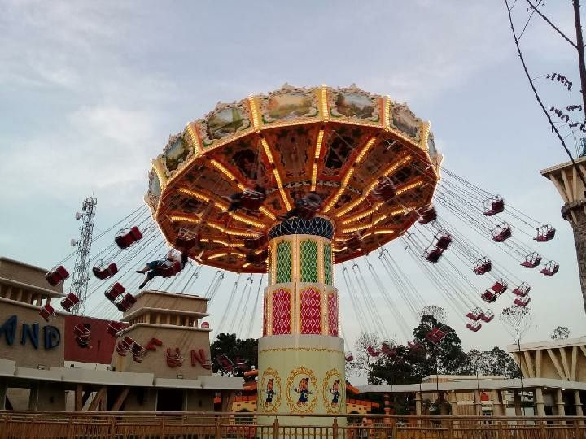
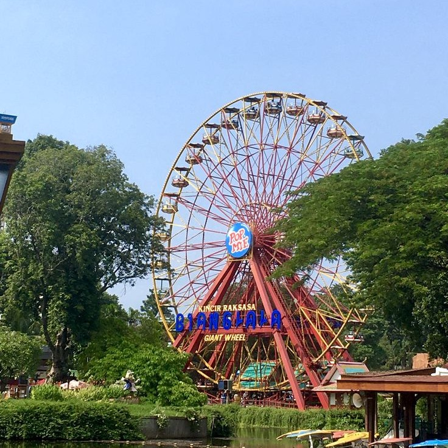
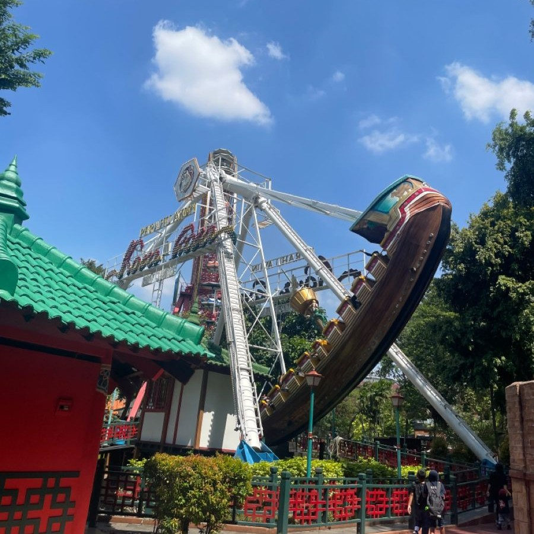
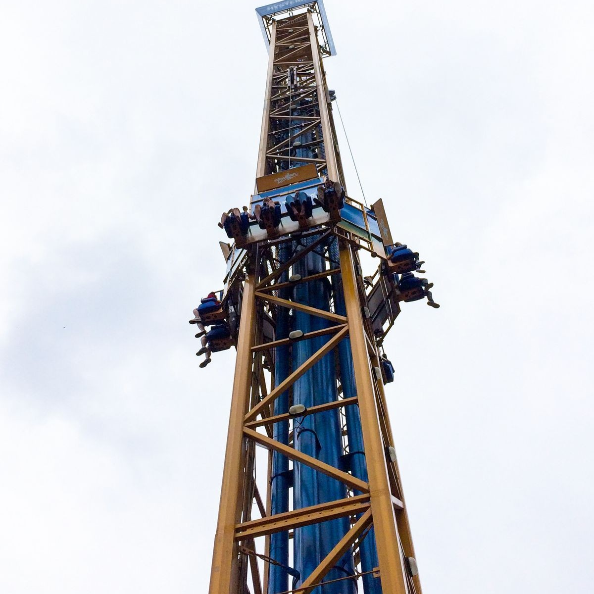
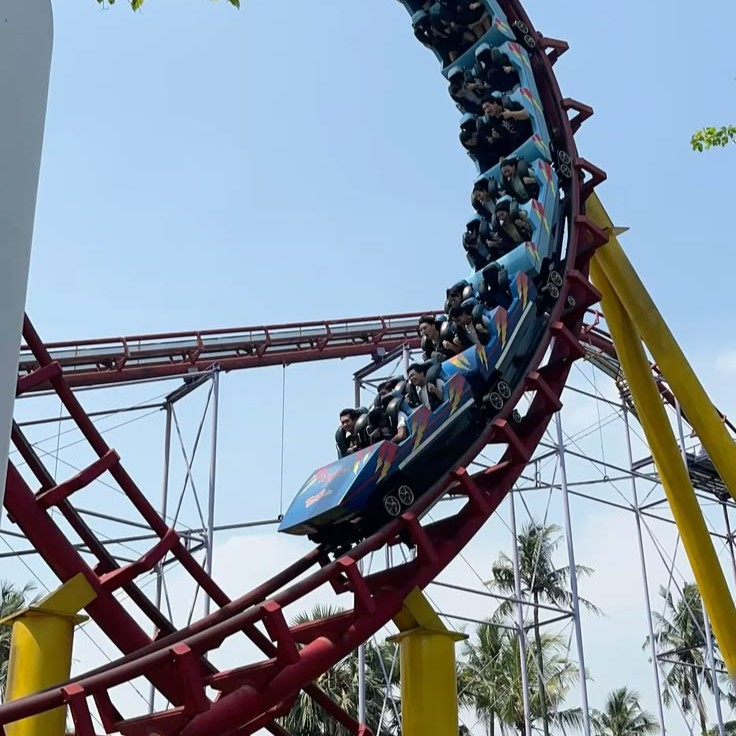

Tepat di pesisir Jakarta Utara, Dunia Fantasi atau yang lebih akrab disapa Dufan berdiri sebagai taman rekreasi paling ikonik dan populer di Indonesia. Pertama kali menyapa publik pada 29 Agustus 1985, theme park pertama yang dikembangkan oleh Perseroan ini telah mengantongi sertifikat ISO 9001:2015 sejak Februari 2017 sebagai jaminan standar kualitas pelayanannya.
Bukan sekadar pusat hiburan outdoor, Dufan juga memposisikan diri sebagai kawasan edutainment fisika terbesar di Indonesia. Mengusung konsep keajaiban "Fantasi Keliling Dunia", destinasi ini memanjakan para pengunjungnya melalui beragam wahana permainan berteknologi tinggi yang terbagi secara ciamik ke dalam sembilan kawasan tematik, mulai dari Indonesia, Jakarta, Asia, Eropa, Amerika, Yunani, Hikayat, Kalila, hingga Fantasy Lights. Dari atraksi pemacu adrenalin hingga pertunjukan edukatif untuk keluarga, Dufan siap memberikan pengalaman berlibur yang tak terlupakan.




This place is always very crowded even during weekdays. I really enjoyed my time here.
Dunia Fantasi is still a fun and nostalgic theme park, especially if you enjoy classic rides and a lively atmosphere.
i'm having 'tsunami nostalgia' because for many years i'm back to dufan ancol 🥹